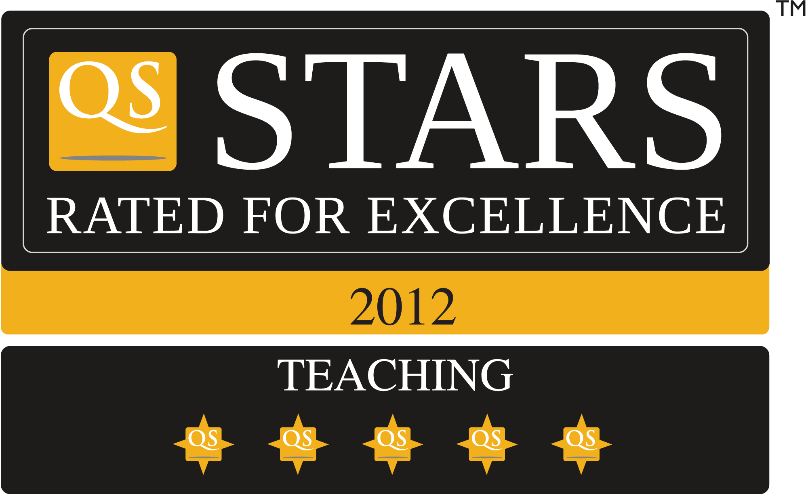
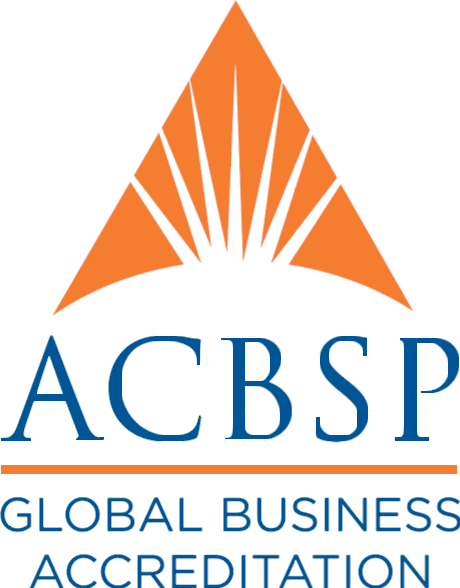
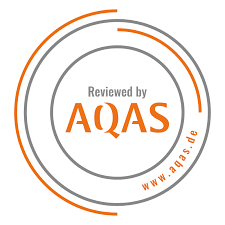
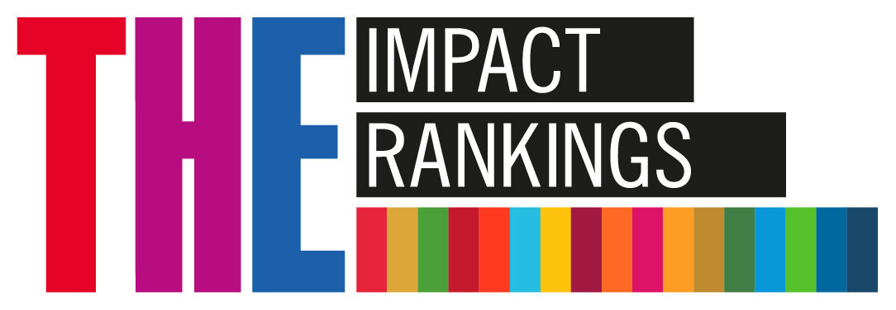

Năm 2006, một giấc mơ giáo dục bắt đầu.
Không phải từ một toà nhà, mà từ một câu hỏi: làm sao để người trẻ Việt học xong là làm được — và làm được ở bất cứ đâu trên thế giới? Đó là khởi đầu của trường đại học đầu tiên do một doanh nghiệp Việt Nam (FPT) thành lập.
Cuộn xuống để đọc hành trình ấy.
Cuộn để khám pháKhoảng cách giữa giảng đường và công việc thật.
Có một thời, không ít sinh viên ra trường với tấm bằng trong tay nhưng vẫn bỡ ngỡ trước công việc đầu tiên: kiến thức thì có, nhưng kỹ năng thực chiến, ngoại ngữ và tư duy nghề nghiệp lại là một khoảng trống. Doanh nghiệp phải đào tạo lại từ đầu; người trẻ mất thêm thời gian để bắt nhịp.
Ngày 08/9/2006, theo Quyết định 208/2006/QĐ-TTg, Trường Đại học FPT chính thức ra đời — trường đại học đầu tiên do một doanh nghiệp Việt Nam (FPT) thành lập. Một ngôi trường sinh ra từ doanh nghiệp, hiểu doanh nghiệp, và đặt người học vào trung tâm.
QĐ 208/2006/QĐ-TTg · 08/9/2006“Học để làm được, chứ không chỉ để biết.” Tinh thần đào tạo của Trường Đại học FPT
Đưa trí tuệ Việt ra với thế giới — bằng tri thức thật và bản lĩnh thật.
Học qua thực hành
Kiến thức gắn liền dự án thật, làm việc thật — để sau tốt nghiệp là bắt tay vào nghề ngay.
Chuẩn quốc tế
Ngoại ngữ, tư duy toàn cầu và môi trường mở — để người trẻ Việt tự tin sánh vai bè bạn năm châu.
Con người là gốc
Khơi dậy đam mê, kỷ luật và tinh thần dấn thân — bồi đắp cả tài năng lẫn nhân cách.
Từng cột mốc, từng bước trưởng thành.
Mỗi năm tháng là một lớp người trẻ trưởng thành, một cánh cửa mới mở ra. Dưới đây là những cột mốc đã được ghi nhận trên hành trình của Trường Đại học FPT.
-
1999
FPT bắt đầu đào tạo công nghệ thông tin theo giáo trình Aptech — tiền thân của Tổ chức Giáo dục FPT, đặt nền móng cho triết lý “học để làm được”.
Khởi nguồn -
2006
Thành lập Trường Đại học FPT (QĐ 208/2006/QĐ-TTg) — đại học đầu tiên do một doanh nghiệp Việt Nam thành lập.
Thành lập -
2009
Khai giảng Campus Hà Nội tại Khu Công nghệ cao Hoà Lạc — không gian học tập gắn liền môi trường công nghệ.
Cơ sở vật chất -
2012
Trở thành đại học đầu tiên Việt Nam được QS Stars đánh giá — dấu mốc khẳng định chất lượng theo chuẩn quốc tế.
Xếp hạng -
2013
Bắt đầu tuyển sinh sinh viên quốc tế — môi trường học tập mở, đa văn hoá.
Quốc tế hoá -
2018
Trở thành thành viên AACSB và mở rộng hệ thống campus trên cả nước.
Kiểm định -
2019
Chương trình Quản trị Kinh doanh đạt chuẩn ACBSP; khởi công Campus AI Quy Nhơn.
Kiểm định -
2024
Kiểm định chương trình CNTT theo chuẩn AQAS và kiểm định cấp cơ sở giáo dục (CEA, Chu kỳ 2).
Kiểm định -
2025
THE Impact Rankings: Top 80 thế giới về SDG 8 — Việc làm tốt & Tăng trưởng kinh tế.
Xếp hạng
Không chỉ học — mà còn sống trọn tuổi trẻ.
Phía sau những con số là một cộng đồng 56.000+ sinh viên và học viên đang học tập, sáng tạo và trưởng thành mỗi ngày trên khắp 5 campus toàn quốc. Câu lạc bộ, sự kiện, dự án thật — những điều ấy nuôi dưỡng cả tài năng lẫn bản lĩnh.
Để rồi khi rời giảng đường, họ sẵn sàng bắt nhịp công việc — nhiều người trong số đó vươn ra làm việc tại các quốc gia phát triển như Mỹ, Anh, Đức, Nhật Bản, Canada, Australia, Singapore…
Những con số kể phần còn lại của câu chuyện.
Hơn hai thập kỷ, hành trình ấy được kể lại bằng những con số biết nói — đếm lên ngay khi phần này lọt vào màn hình.
5 campus: Hà Nội (Hoà Lạc), TP.HCM, Đà Nẵng, Cần Thơ, Quy Nhơn. Mạng lưới đối tác trải rộng tại 40+ quốc gia.
Được ghi nhận bởi những tổ chức uy tín.
Những dấu mốc kiểm định và xếp hạng dưới đây mang tên THẬT. Mỗi thẻ có một ô để gắn LOGO CHÍNH THỨC của tổ chức — trang này không tự tạo hay phỏng dựng bất kỳ logo nào.

QS Stars
Đại học đầu tiên Việt Nam được QS Stars đánh giá — 5 sao ở 4 lĩnh vực: Giảng dạy, Việc làm, Trách nhiệm xã hội, Cơ sở vật chất.
AACSB
Thành viên mạng lưới kiểm định giáo dục kinh doanh uy tín toàn cầu.

ACBSP
Chương trình Quản trị Kinh doanh đạt chuẩn kiểm định ACBSP.

AQAS
Kiểm định chương trình Công nghệ thông tin theo chuẩn châu Âu.
CEA – Sài Gòn
Kiểm định cấp cơ sở giáo dục (Chu kỳ 2).

THE Impact Rankings
Top 80 thế giới về SDG 8 — Việc làm tốt & Tăng trưởng kinh tế.
Chương tiếp theo của câu chuyện này là của bạn.
Mỗi buổi ôn tập, mỗi câu trả lời đúng, mỗi lần kiên trì học lại — đều là một dòng bạn đang viết vào hành trình của chính mình. Bắt đầu ngay hôm nay nhé.